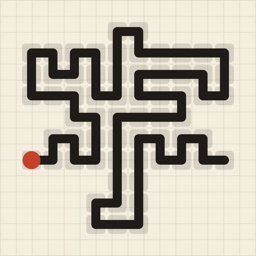

好きな字で一筆書き
名前の字も、一筆書きの盤になる。iPhone と iPad のパズルです。
マスを全部、1本の線でなぞる一筆書きのパズルです。盤の形が「字」になっています。朱の丸のマスから始めて、となりのマスへ指でなぞり、全部のマスを1回ずつ通ったらできあがりです。
- 好きな字で盤ができます。名前やすきな言葉を入れると、1字ずつ、その字の形をしたマスの盤ができます。離れた画は細い道でつなぎ、一筆で通れることを計算で確かめてから出します
- 入っている盤も字の形です。ひらがな46字と小学1年の漢字80字を、小（7×7）・中（10×10）・大（13×13）の3つの細かさで、378面。スタート地点だけを変えた同じ盤の使い回しはしません
- 1つ前へもどると線が消え、通ったマスを押すとそこまでもどります。ヒントは押したときだけ、合っている所までもどして次の3マスを見せます
- 作った言葉は「わたしの字」に残ります。登録・課金・通知はありません。記録はこの端末の中だけに保存します。画面のいちばん下に小さな広告が出ます（画面いっぱいの広告・動画の広告は出さず、広告の音は消しています）